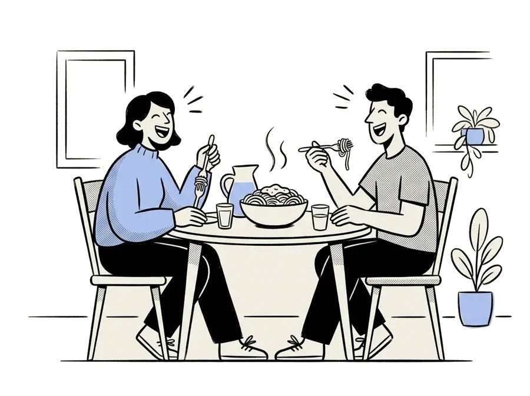
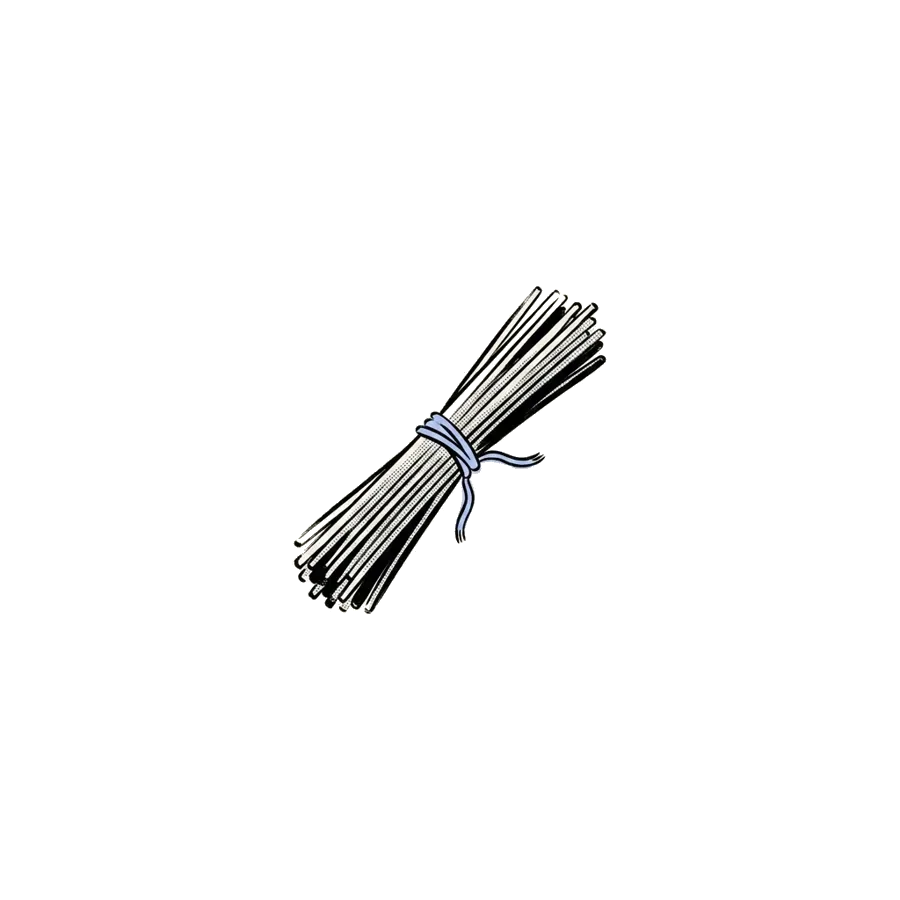
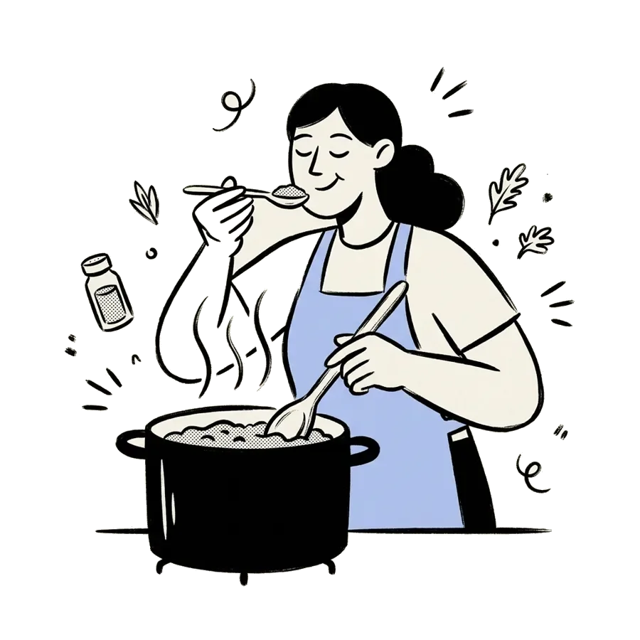
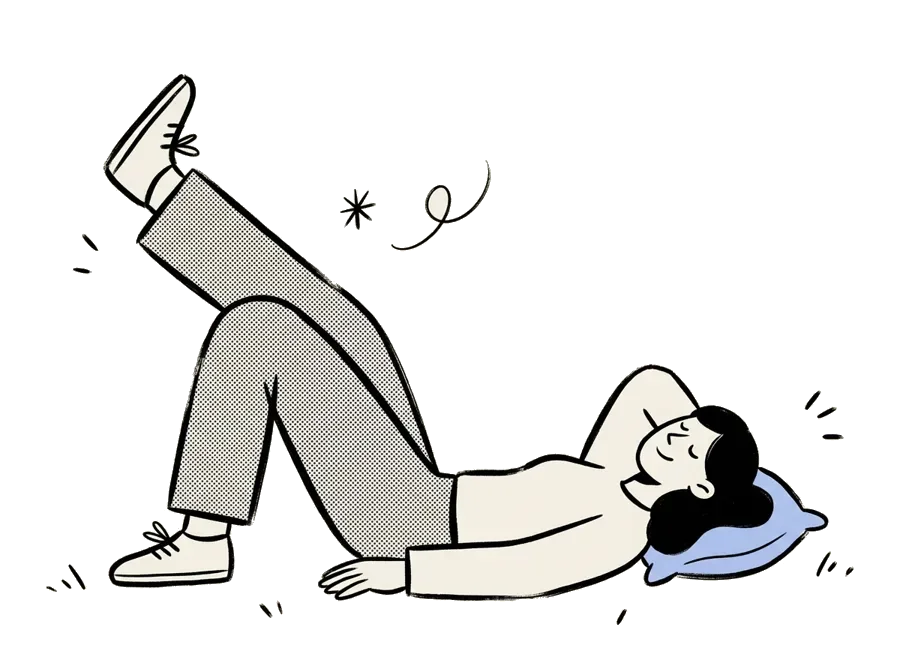

9:41
Wenn du magst
Kochen nach Angebot – jede Woche günstig.
Los geht's
EinstiegDer Einkäufer steht in einem großen Kreis, der oben links aus dem Bild läuft.
9:41

Hey Jona,
Was kochen
wir heute?
wir heute?
HEUTE ABEND
Spaghetti Pomodoro
25 min · 2,10 € p. P.
Diese Woche38,20 €
Gespart12,40 €
StartKein Kasten: das Gericht steht frei, die Tisch-Szene in einem Kreis, der rechts aus dem Bild läuft. Unten die Woche als große Zahlen.
9:41
KW 45 · 3.–9. Nov
Deine Woche
6/7
MoLinsen-Dal
Dienstag4. Nov
MiOfengemüse
DoCurry
FrPizza
Safrei
SoBraten
ABEND · 25 MIN
Spaghetti Pomodoro
2,10 €
p. P. · 2 im Angebot
WochenplanZeitstrahl am linken Rand, darunter steht kurz das Gericht. Der gewählte Tag führt mit einer Linie zum blauen Halbkreis rechts – darin der Teller, Name und Preis.
9:41
Rezepte · Pasta
Spaghetti
Pomodoro
Pomodoro
Zeit25′
p. P.2,10
kcal540
Zutatenfür 2 · 6 Stück
 Tomaten−30 %400 g
Tomaten−30 %400 g Basilikum1 Bund
Basilikum1 Bund
Spaghetti250 g Knoblauch2 Zehen
Knoblauch2 ZehenKochmodus
5 Schritte
RezeptBleibt beim Bogen oben links. Neu: Zeit, Preis und kcal als große Zahlen neben dem Teller; Zutaten als Zeilen mit Farb-Kreis statt Kacheln.
9:41

08:24
Schritt02/05
Knoblauch anschwitzen, Tomaten dazu.
In Olivenöl glasig dünsten, dann 8 Minuten köcheln lassen.
KochmodusSchrittnummer riesig wie in der Sport-Vorlage. Die Koch-Szene steht in einem Tor-Bogen, der unten aus dem Bild läuft.
9:41

10115 · 6 Läden
Angebote
Diese
Woche128
Woche128
AlleMerkliste 3GemüseKühlung
Tomaten
Lidl · 1 kg
1,99 €
Knoblauch
Rewe · 3 Stück
0,79 €
Basilikum
AngeboteFernglas-Szene in einem Blatt (eine große Rundung) oben rechts, die Anzahl als große Zahl. Jedes Angebot ist eine Zeile; seine Farb-Lasche mit der Zeichnung kommt von rechts herein.
9:41
Rewe · 4 offen
Einkauf
Offen5,48 €
Gespart2,50 €
Basmatireis1 kg−25 %
Hähnchenbrust400 g
Kaffee500 g
Basilikum
Artikel hinzufügen
EinkaufOffen und gespart als große Zahlen (gespart grau wie der Vorjahreswert der Vorlage), Einkäufer im Blatt oben rechts, ruhige Liste.
9:41

1/3
Was ist im Kühlschrank?
Mach 1–3 Fotos. Wir füllen den Vorrat und schlagen Gerichte vor.
Foto machen
Kühlschrank scannenSzene im Kreis, der rechts aus dem Bild läuft; Fortschritt als Zahl oben.
9:41

Noch nichts
geplant.
geplant.
Kein Stress – in 30 Sekunden steht dein Plan.
Plan erstellen
Leer-ZustandDie Figur liegt auf einem Hügel, der unten aus dem Bild läuft.